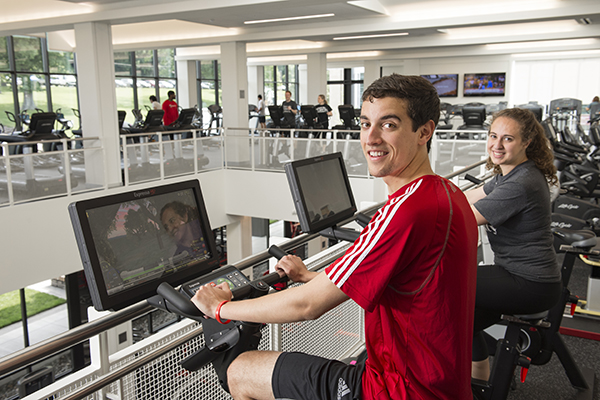

Running
Cohen University Center
Duration: 20 minutes - 1 hour
Hours
Monday thru Friday: 6:00 am-10:00 pm
Saturday and Sunday: 9:00 am-10:00 pm
more...
Schenley Park Loop Trail
Duration: 1 Hour
Schenley Park Loop Trail is a 2 mile loop trail located near CMU and is good for all skill levels. The trail offers a number of activity options and is accessible from May until September. Dogs are also able to use this trail.
Get direction...